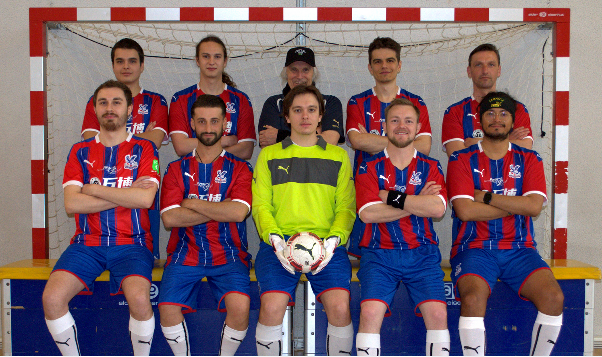
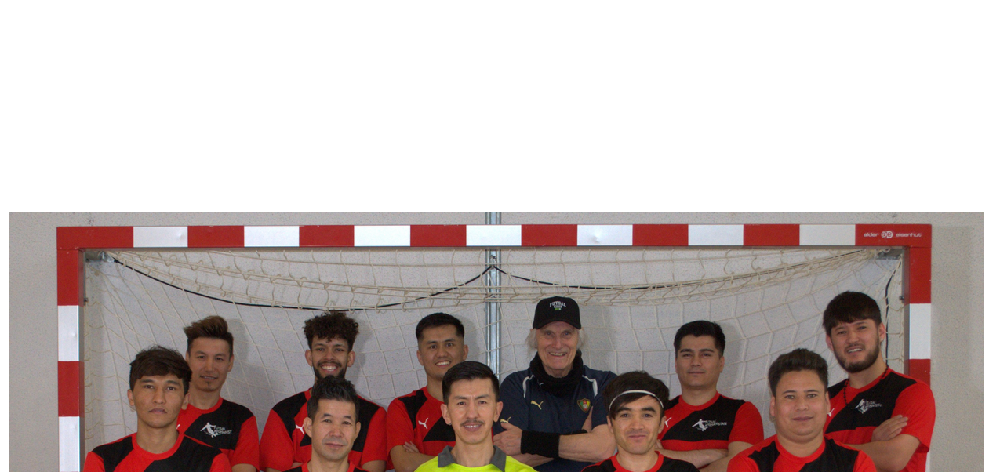

Futsal Team Lachenzelg
Gründungsjahr: 2003
Meisterschaftstitel: 9
Futsal Team Lachenzelg, gegründet 2003, ist das älteste Team der Organisation. Bis 2010 nahm das Futsal Team Lachenzelg hauptsächlich an Juniorenturnieren teil, doch an der ersten Futsal Meisterschaft der "Amigos de Futsal" kletterten sie gleich auf den ersten Rang und zum Meistertitel. Das Kader besteht weiterhin aus denselben Spielern wie vor 10 Jahren, sicherlich einer der Gründe, weswegen er die erfolgreichste Mannschaft im Amigos de Futsal Verband bildet. Acht Meisterschaftspokale schmücken das Team mittlerweile, welches seit 2013 jeden Meistertitel verteidigen konnten.

Futsal Christal Palace Lachenzelg
Gründungsjahr: 2010
Meisterschaftstitel: 0
Futsal Team Lachenzelg, gegründet 2003, ist das älteste Team der Organisation. 2010 begann Hurti Wiedmer die Futsal Sélection Lachenzelg, das "Farm Team" der Organisation, zu trainieren. Seit ihrer Gründung unterzog sie sich mehreren Rochaden mit jungen Spielern, die der Mannschaft beitraten und sie wieder verliessen. Seit 2020 trägt die Mannschaft den Namen Futsal Crystal Palace Lachenzelg und spielt mit einem festen Kader unter Kapitän Tim. Crystal Palace verfügt mittlerweile über einen guten Zusammenhalt und konnte schon an mehreren Turnieren ihr Können beweisen. Der Meistertitel bleibt jedoch bis jetzt aus.

Futsal Afghanistan Lachenzelg
Gründungsjahr: 2017
Meisterschaftstitel: 0
Zwei afghanische Spieler kamen 2016 unter die Führung von Hurti Wiedmer. Seit 2017 spielen sie und ihre Freunde als Futsal Afghanistan Lachenzelg. Die Mannschaft besteht ausschliesslich aus afghanischen Flüchtlingen, welche mit viel Leidenschaft mit Crystal Palace regelmässig trainieren. Zwar blieben bis jetzt Erfolge an Turnieren und der Meisterschaft aus, aber sie hat enorme Fortschritte gemacht unter Wiedmer.

Team Lachenzelg International
Gründungsjahr: 2017
Team Lachenzelg International vertritt die Futsal Organisation Lachenzelg auf internationaler Ebene. Die Mannschaft besteht aus Spielern des Futsal Team Lachenzelg, wenigen Spielern der Sélection und zum Teil auch Gästen aus Höngg. Der 1. FC Futsal Innsbruck wie auch Brasil Bludenz gehören zu den Gegnern, gegen die Team International schon öfters gespielt hat.